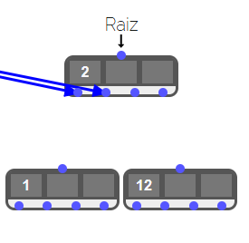
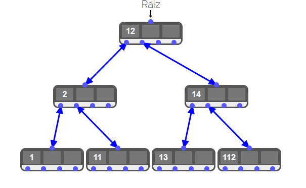

Árvore B
O que é uma Árvore B?
A Árvore B é uma estrutura de dados em forma de árvore balanceada, amplamente utilizada em sistemas de banco de dados e sistemas de arquivos para organizar e buscar grandes volumes de dados. Ela é projetada para minimizar o número de acessos ao disco e, portanto, é altamente eficiente em cenários de armazenamento em memória secundária.
Uma Árvore B garante que todos os nós, exceto os nós folha, têm pelo menos um número mínimo de chaves e no máximo um número máximo de chaves, promovendo um balanceamento eficiente da estrutura.
Como Funciona?
A Árvore B possui nós que contêm múltiplas chaves ordenadas. Cada chave separa os subnós para que as operações de busca, inserção e remoção possam ser realizadas de maneira eficiente. A altura da árvore é mantida o mais baixa possível, garantindo acesso rápido aos dados.
Estrutura de uma Árvore B
Cada nó da Árvore B contém:
- Um número variável de chaves ordenadas.
- Ponteiros para os subnós filhos, dividindo os intervalos das chaves.
Inserindo um Elemento na Árvore B
Durante a inserção, os elementos são adicionados nos nós corretos de forma ordenada. Se um nó exceder o número máximo de chaves permitido, ele é dividido, e a chave mediana sobe para o nó pai.
class No {
public int[] chaves;
public No[] filhos;
public int numeroChaves;
public bool folha;
public No(int grau) {
chaves = new int[2 * grau - 1];
filhos = new No[2 * grau];
numeroChaves = 0;
folha = true;
}
}
class ArvoreB {
private No raiz;
private int grau;
public ArvoreB(int grau) {
this.grau = grau;
raiz = new No(grau);
}
public void inserir(int chave) {
if (raiz.numeroChaves == 2 * grau - 1) {
No novoNo = new No(grau);
novoNo.folha = false;
novoNo.filhos[0] = raiz;
dividir(novoNo, 0, raiz);
raiz = novoNo;
inserirNaoCheio(raiz, chave);
} else {
inserirNaoCheio(raiz, chave);
}
}
private void inserirNaoCheio(No no, int chave) {
int i = no.numeroChaves - 1;
if (no.folha) {
while (i >= 0 && chave < no.chaves[i]) {
no.chaves[i + 1] = no.chaves[i];
i--;
}
no.chaves[i + 1] = chave;
no.numeroChaves++;
} else {
while (i >= 0 && chave < no.chaves[i]) {
i--;
}
i++;
if (no.filhos[i].numeroChaves == 2 * grau - 1) {
dividir(no, i, no.filhos[i]);
if (chave > no.chaves[i]) {
i++;
}
}
inserirNaoCheio(no.filhos[i], chave);
}
}
private void dividir(No pai, int i, No filho) {
No novoNo = new No(grau);
novoNo.folha = filho.folha;
novoNo.numeroChaves = grau - 1;
for (int j = 0; j < grau - 1; j++) {
novoNo.chaves[j] = filho.chaves[j + grau];
}
if (!filho.folha) {
for (int j = 0; j < grau; j++) {
novoNo.filhos[j] = filho.filhos[j + grau];
}
}
filho.numeroChaves = grau - 1;
for (int j = pai.numeroChaves; j >= i + 1; j--) {
pai.filhos[j + 1] = pai.filhos[j];
}
pai.filhos[i + 1] = novoNo;
for (int j = pai.numeroChaves - 1; j >= i; j--) {
pai.chaves[j + 1] = pai.chaves[j];
}
pai.chaves[i] = filho.chaves[grau - 1];
pai.numeroChaves++;
}
}
Explicação
A inserção em uma Árvore B mantém a ordem das chaves e garante o balanceamento, dividindo nós quando necessário.
